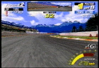
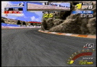

GRUNWALD CIRCUIT
Tactics for the sencond stage

area with rare color = place where you should decrease your acceleration.
area with rare color = place where you should decrease your acceleration.
 |
first corner (right)
Enter from out into inside with acute angle. Keep that angle
and drift toward outside. |
 |
second corner (right)
Be cautious, when exiting the curve rather than entering the
curve. Try to feel like cutting the steer toward the oppsite side
moment before exiting the curve.(In this case, to the left) Or else,
the machine will go crazy. Another way is to cut the steering bit
by bit and adjust your direction. |
 |
third corner (right)
To prepare for the next corner, enter the curve from outside
and by decreaing your acceleration try not to expand your orbit. |
 |
fourth corner (left)
Drop the gear down to fifth mission and clear the curve by
cutting widly. You could drift but beaware of the timing. |
|  | fifth corner (right)
You can easily turn the curve when you are in the fifth mission. |
|  | (final)sixth corner (right)
Take the out-middle-out course, with gear on the forth transmission.
If you cut toward the inside too much, engine rev will drop radically
so keep the engine rev on the red zone and maintain the accel and
the angle that you have at that time. Step fully on the gas pedal
and weak on the brake is one technique to conqure this corner. |

|

|